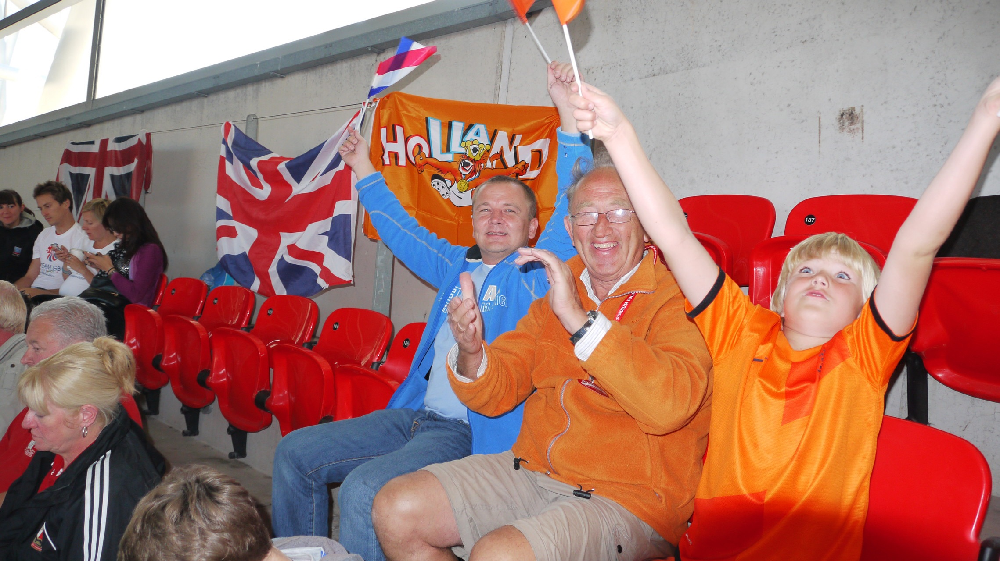
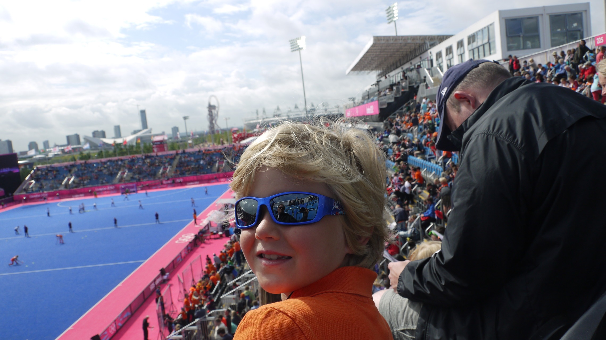

1 / 3

Ik, mijn oom en opa in het Wembley Stadium
2 / 3

Twee judoka's
3 / 3

Ik bij een hockeywedstrijd
Ik ben meerdere keren in het Verenigd Koninkrijk geweest. Naar steden zoals Londen en Manchester, maar ook naar het kustplaatsje Broadstairs. Ik ga meer vertellen over mijn vakantie naar de Olympische Spelen van 2012 in Londen. Ik was op vakantie met mijn zus, moeder, vader, oom en opa en oma.
Aangezien een appartement in de stad met zo'n grote groep onbetaalbaar was, hadden we een appartement net buiten Londen. We hadden een groot huis met een zwembad dat rolstoeltoegankelijk was, omdat mijn oma in een rolstoel zit. Het appartement was vlakbij een treinstation waardoor we al binnen een kwartiertje met de trein ons in de stad bevonden. De wedstrijden waren allemaal in de stad of iets buiten de stad. Hierdoor hoefden we niet veel te reizen en konden we overal komen met de metro en trein.
In deze twee weken hebben we veel gedaan. Vooral naar wedstrijden toe gegaan, maar ik heb door het reizen alsnog een goede indruk gekregen van de stad. Het leukste van die vakantie vond ik de voetbalwedstrijd in het Wembley Stadion. Dit is een van de grootste stadions van de wereld met een capaciteit van 90.000 mensen. Ik vond het dan ook als klein jongetje heel vet om het stadion te zien. Dit is me zeker bijgebleven.
Londen is een hele grote stad met veel dingen om te doen waar ik leuke herinneringen aan heb overgehouden. Ik raad het zeker aan om naar het Verenigd Koninkrijk op vakantie te gaan.
| Officiële landstaal: | Engels |
|---|---|
| Hoofdstad: | Londen |
| Regeringsvorm: | Constitutionele monarchie Parlementaire democratie |
| Regeringsleider: | Premier Boris Johnson |
| Oppervlakte: | 242.495 km² |
| Inwoners: | 65.761.117 (2020) 271,2/km² (2020) |